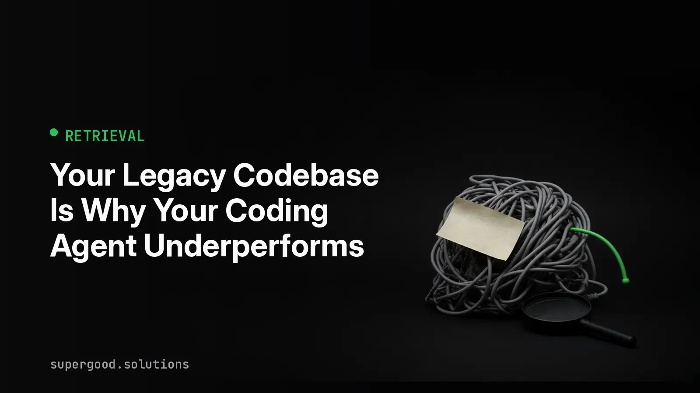

Your Legacy Codebase Is Why Your Coding Agent Underperforms
TL;DR: Your coding agent is probably fine. The repo it is reading is the problem, and no model upgrade will fix a codebase that hides its own meaning from search.
Key Insight
When an enterprise coding agent stalls, the first instinct is to blame the model and shop for a bigger one. That is usually the wrong diagnosis. An agent working in a large repo does not read the repo. It searches it, pulls a few files into context, and reasons over whatever came back. The quality of the answer is capped by the quality of that search.
Now look at what a decade-old monorepo gives a search system to work with. Three names for the same concept. A UserManager, an AccountService, and a CustomerHelper that all touch the same table. Comments that say "see Dave's note" where Dave left in 2019. Business rules encoded as a magic number in a utility three layers down. Retrieval, whether it is embeddings, grep, or a code graph, can only surface what the code makes findable.
This is a pro-agent argument. Agents work. They write good tests, explain unfamiliar modules, and handle mechanical migrations well. But they work in proportion to how legible your system is, and legibility is a property you can improve on purpose.
Why Teams Miss This
Three assumptions keep teams stuck.
- "A bigger context window solves it." A large monorepo can run to tens of millions of tokens, and even a million-token window cannot hold it. Worse, models attend unevenly to long inputs. Details buried in the middle of a huge prompt get lost. The real constraint is fetching the right context, in the right order, for this task. That is a retrieval problem, not a capacity problem.
- "The agent hallucinated, so the model is weak." Often the agent retrieved a plausible neighbor instead of the real definition. If your repo has five similar helpers, a confident wrong pick is the expected outcome. The model did its job on bad input.
- "Cleanup is a separate project from AI adoption." Teams run the agent pilot and the tech debt backlog as two tracks. They are the same track. Every ambiguous name you leave in place is a tax on every agent run, forever.
How to Actually Do It
Start by measuring retrieval before you touch anything else. Take 20 questions about your real internal APIs, the kind a new hire would ask. For each one, check whether your retrieval path returns the file that defines the thing, not just files that call it. That hit rate is your baseline.
Then fix legibility in order of payoff.
- Pick one canonical name per concept and rename the rest. Rename tooling makes this cheaper than it sounds. Start with the five domain nouns that appear most often.
- Move tribal knowledge out of comments and into a file the agent loads. A short
AGENTS.mdorCLAUDE.mdat the repo root, plus one per major service, with conventions, forbidden patterns, and where the sharp edges are. - Write characterization tests before the agent refactors anything. Legacy code carries implicit contracts. Tests that capture current behavior let the agent change structure without silently changing meaning.
- Give the agent structural search, not only text search. A code graph or symbol index answers "who calls this" exactly, which embeddings answer only approximately.
- Scope the task to what fits. Agents are reliable on isolated modules and risky on cross-cutting changes. Break the second kind into the first kind.
A minimal retrieval audit you can run today looks like this:
# For each question, record the file your agent's search returns first
# and whether it is the definition or just a caller.
while read -r symbol; do
echo "== $symbol"
rg --files-with-matches "class $symbol|def $symbol|function $symbol" | head -3
rg --count "$symbol" | sort -t: -k2 -nr | head -3
done < internal_symbols.txtIf the definition is not in the top results, or there are several competing definitions, you have found your first cleanup target.
What We've Learned
Treat the retrieval hit rate as a number you track, like test coverage. Run the 20-question audit this week, pick the three worst offenders, and fix their names and context files before you evaluate another model. Then re-run the audit and compare agent task success on the same set of tickets. In our experience, the gain from making a repo legible tends to show up faster than the gain from a model swap, and it carries over to every model you try next.
Sources
- Tian Pan, AI Coding Agents on Legacy Codebases: What Works and What Backfires: tianpan.co/blog/2026/04/19/ai-coding-agents-brownfield-legacy-code
- Tian Pan, Coding Agents in the Monorepo: tianpan.co/blog/2026/04/17/coding-agents-monorepo-context-window
- Vasilopoulos, Codified Context: Infrastructure for AI Agents in a Complex Codebase (arXiv:2602.20478): arxiv.org/abs/2602.20478
- Kumanyaev, Why AI coding agents fail in large codebases: zzet.org/gortex/why-ai-coding-agents-fail-large-codebases
Have a specific workflow in mind?
Bring it to a Quick Scan — a live working session where we'll tell you honestly whether it should be an agent, a workflow, or left alone, before you spend a dollar building it. You get 3 prioritized recommendations on the call, a one-page summary after, and the $500 credited toward any engagement within 30 days.
Get new posts + practical agent-ops notes
One email when something new goes up. No nurture sequence, no spam — unsubscribe whenever you want.